arXiv 2203.04955v2 · cs.LG · 2022 年 7 月 19 日 · ICML 2022 · 中文精读
Temporal Difference Learning for Model Predictive Control
作者 Nicklas Hansen、Xiaolong Wang、Hao Su。单位 UC San Diego。
关于这份精读。论文在 arXiv 上用的是 CC BY 4.0 许可，所以这里放了原图。全部 15 张图都来自 Hansen、Wang、Su 的这篇论文，我只做了裁剪和转成 webp，没有修改内容。文字是我用自己的话按原文顺序整理的，覆盖全部章节和附录 A 到 L。
公式按原文编号，表格数字照录原文。标成“读者注”的框是整理时核算或对照发现的，不属于论文内容，页尾有汇总。其中“矢量读数”指用 pdftocairo -svg 取出图里的路径坐标，再用刻度线校准得到的数。
代码对照用的是官方仓库 nicklashansen/tdmpc 的 commit f4d85ec（2023-11-25，仓库最新，MIT 许可）。我只读了代码和它附带的结果 CSV，没有运行，也就没有复现论文的任何数字。
数据驱动的 MPC（Model Predictive Control，模型预测控制：每一步对未来一小段做优化，只执行第一个动作，下一步重来）有两个吸引人的地方：学模型可能省样本，算得越多表现可能越好。难处也是两个：规划长了太贵，环境又很难学准。
TD-MPC 的做法：用学到的潜空间模型规划一小段（默认 \(H=5\)），这一段之外的回报交给学到的终值函数 \(Q\)。模型和 \(Q\) 用时序差分（Temporal Difference，TD：用“这一步的奖励 + 下一步的估计值”当目标去回归）一起学。模型叫 TOLD（Task-Oriented Latent Dynamics，面向任务的潜动力学），它不重建观测，只预测奖励、价值和下一个潜状态。
读完我认为最值得记住的三点：训练时模型只被奖励、价值和潜一致性约束，所以模型的好坏只按“对规划有没有用”算；执行时不信任任何一个单点估计，每一步都重新采样几百条序列；网络 \(\pi\) 不是最终控制器，它服务于 TD 目标和规划采样。论文和代码在几个地方不一致（读者注 3、4、5），表 2 的 Humanoid Stand 一行和图 1 对不上（读者注 10）。
SuperMimic 只在 §2 提到 TD-MPC 一次，引用的是 ICML 这一版（它的文献 [17]，不是 TD-MPC2）。原话的意思是：TD-MPC 把短视野规划和终值预测结合起来。它没有说从 TD-MPC 拿了什么，同一段里它说启发自己带评论家自举目标的是 SHAC。我查了 SuperMimic 全文：“planning”只出现在 Dyna 那篇文献的标题里，它没有做规划。
所以下面这张表不是“SuperMimic 改了什么”，而是我对比两篇得出的结构差别。最核心的一行：两者都解“短 \(H\) 步奖励 + \(\gamma^H\times\) 价值”这个目标，但 TD-MPC 在每个决策步对这一条动作序列用采样解，SuperMimic 在训练时对策略参数用梯度解。
| 项目 | TD-MPC | SuperMimic |
|---|---|---|
| 动作从哪来 | 每步跑 \(J\) 轮 MPPI，式 (3)(4) | \(a_t=\pi_\theta(o_t,g_t)\)，一次前向（§3.1） |
| 每决策步模型调用 | \(d,R\)：537×5×6 = 16,110 次；\(Q,\pi\)：537×6 = 3,222 次（我的计算）。约 20 ms | 部署不调用世界模型。50 Hz 控制；单次推理耗时我没找到 |
| \(H\) 的含义 | 5，推理时试探的长度 | 32，训练时反传的长度，部署时没有 \(H\) |
| 求导 | 规划不求导，模型只前向 | 穿过冻结的 \(f_\omega\) 做 BPTT，用到模型雅可比 |
| 策略怎么学 | 最大化 \(Q(z,\pi(\mathrm{sg}(z)))\)，不穿过 \(d\)，式 (11) | 最大化 32 步想象回报 + 终值，它的式 (2) |
| 模型预测什么 | 潜状态、奖励、价值；不预测观测，无解码器 | 显式状态 \(\hat s\)、观测 \(\hat{\bar o}\)、奖励、终止，它的式 (1) |
| 模型损失和策略 | 奖励、价值的梯度直接进 \(h,d\)，模型为任务塑形 | 分开：世界模型拟合模拟器转移，策略更新时冻结 |
| 多步拟合 | \(H=5\)，时间权重 \(\lambda=0.5\) | \(k=8\)，式 (1) 没有时间权重 |
| 价值 | \(Q(z,a)\)，1 步 TD，两个 \(Q\) 取小，EMA 目标网络，用回放的真实转移 | \(V(\hat s,g,\xi)\)，GAE 式 \(\lambda\) 回报，无目标网络，只用想象转移 |
| 收集数据 | 用规划收集（算法 2 第 4 行） | 用策略加动作噪声收集 |
| 相同的地方 | 都是确定性模型，都在同一循环里边收集边拟合，都从回放缓存取多步窗口递推拟合，都用价值函数兜住短视野之外的回报。这些共同点两边都没有说是从对方来的 | |
| 验证 | 只在仿真里（这篇论文） | 真机 Unitree G1（§4.4） |
这个差别意味着什么。代价出现的时刻不同。TD-MPC 推理贵，好处是遇到没训练好的状态还能拿模型多算一步，图 6 里规划比 \(\pi\) 高 111 分就是这个收益。SuperMimic 一次前向，能力固定在 \(\theta\) 里，推理便宜到可以上真机 50 Hz。论文 §H 的 20 ms 是一张 RTX3090 上的数，机载能否跑这里没有证据。动画第 11 幕可以逐项切换，并让同一个玩具的两种执行方式并排跑。
基于模型的强化学习大致有两条路：用模型规划（比学出来的策略好，但长视野贵）；用模型生成数据去训练无模型策略（省样本，但模型偏差会传给策略）。结果是它们在连续控制上长期没能明显胜过更简单的无模型方法。
MPC 只优化一小段，所以便宜，代价是解是局部的。加一个终值函数，估计规划尽头之后的折扣回报，可以逼近全局解。难的是模型和价值函数都不容易学准。
TD-MPC 的提法是：每个决策步用学到的模型估计短期奖励做轨迹优化，用学到的价值估计长期回报。论文举的例子：人形奔跑时，规划管精确的关节动作，价值管奔跑方向这种高层目标。
主要技术贡献在模型的学法。作者认为把环境里的一切都建模很低效，比如光影。三个改动：
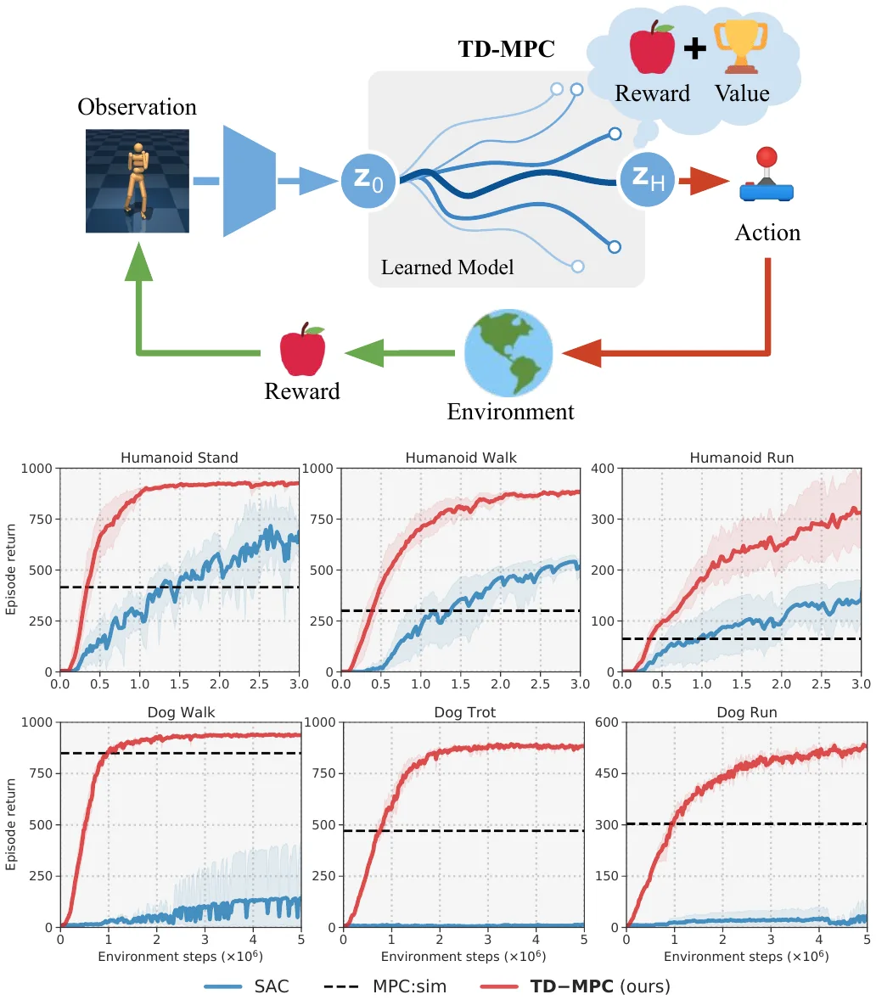
引言说 Humanoid 和 Dog “最快 1M 环境步”解决。官方仓库 results/*.csv 有这六个任务每 20k 步的 5 个种子。我算了 1M 步处的均值：Dog Walk 852，Humanoid Stand 865，Humanoid Walk 722，Dog Trot 584，Dog Run 323，Humanoid Run 185。最终值（Humanoid 3M，Dog 5M）分别是 932、923、885、861、535、357。所以“最快”这个词是准确的，这句话对 Stand 和 Dog Walk 成立，对两个 Run 任务不成立。
矢量图里的 SAC 曲线没有在 3M 结束，路径一直延伸到约 10.2M，只是被坐标轴裁掉。读数：Humanoid Stand 上 SAC 在 3M 约 689，10M 约 883。这是图里隐藏的数据，不是论文报告的数字。
问题设定。无限时域 MDP，元组 \((\mathcal S,\mathcal A,\mathcal T,\mathcal R,\gamma,p_0)\)，状态和动作连续。目标是学映射 \(\Pi_\theta\)，最大化折扣回报 \(\mathbb E_{\Gamma\sim\Pi_\theta}[\sum_{t}\gamma^t r_t]\)。
拟合 Q 迭代。无模型 TD 方法用 \(Q_\theta\) 逼近最优状态-动作价值 \(Q^*\)，反复做回归：
\[\theta_{k+1}\leftarrow\arg\min_\theta\ \mathbb E_{(s,a,s')\sim\mathcal B}\,\|Q_\theta(s,a)-y\|_2^2\tag{1}\]其中 \(y=\mathcal R(s,a)+\gamma\max_{a'}Q_{\theta^-}(s',a')\)，\(\mathcal B\) 是回放缓存，\(\theta^-\) 是在线参数的慢速滑动平均，更新为 \(\theta^-_{k+1}\leftarrow(1-\zeta)\theta^-_k+\zeta\theta_k\)。
模型预测控制。actor-critic 里 \(\Pi\) 是神经网络；控制领域里 \(\Pi\) 是一段轨迹优化程序。每步求有限时域的解，只执行第一个动作：
\[\Pi^{\mathrm{MPC}}_\theta(s_t)=\arg\max_{a_{t:t+H}}\ \mathbb E\Big[\sum_{i=t}^{H}\gamma^i\mathcal R(s_i,a_i)\Big]\tag{2}\]这里的 \(\gamma\) 通常取 1，这和 Q 迭代不同。求解方式之一是不求导的交叉熵法（Cross-Entropy Method，CEM）：反复拟合一个对角高斯分布。式 (2) 不预测长期奖励，所以是短视的。已知价值函数时可以把它接在 \(s_{t+H}\) 上，这叫带终值函数的 MPC。
记号。论文用 \(\Pi_\theta\) 表示规划，\(\pi_\theta\) 表示策略网络；\(\theta\) 是在线参数，\(\theta^-\) 是目标参数。
§2 的公式 \(\theta^-\leftarrow(1-\zeta)\theta^-+\zeta\theta\) 里，\(\zeta\) 是在线参数的份额。表 4 和附录 G 给 \(\zeta=0.99\)，并说比原来的 0.995 “更快”。按公式带入，目标网络每次取 99% 的在线参数，这不是“慢速平均”。代码里 tau: 0.01，p_target.lerp_(p, tau)，也就是 99% 留旧值。所以表 4 的 0.99 是留旧份额，§2 公式的方向写反了；“比 0.995 更快”只在留旧份额的意义下成立，这个是我的推断，和代码一致。
另外 \(\tau\) 在 §3 是 MPPI 温度（0.5），在算法 2 第 19 行是目标网络系数。代码里分别是 temperature 和 tau。
框架由这些部分组成：用 MPPI（Model Predictive Path Integral，模型预测路径积分，Williams 等 2015）做规划 \(\Pi_\theta\)；学到的潜动力学 \(d_\theta\) 和奖励 \(R_\theta\)；终值 \(Q_\theta\)；帮助规划的策略 \(\pi_\theta\)。这一节只讲推理，训练放到 §4。
MPPI。它迭代地更新一族分布的参数，用估计回报前 \(k\) 条轨迹的重要性加权平均。这里的分布是随时间变化、对角协方差的多元高斯：每个未来时间步有一组独立的 \(\mu,\sigma\in\mathbb R^m\)。从初值 \((\mu^0,\sigma^0)\) 出发，采样 \(N\) 条轨迹，用模型 \(d_\theta\) 滚出，估计总回报：
\[\phi_\Gamma\triangleq\mathbb E_\Gamma\Big[\gamma^H Q_\theta(z_H,a_H)+\sum_{t=0}^{H-1}\gamma^t R_\theta(z_t,a_t)\Big]\tag{3}\]其中 \(z_{t+1}=d_\theta(z_t,a_t)\)，\(a_t\sim\mathcal N(\mu^{j-1}_t,(\sigma^{j-1}_t)^2\mathrm I)\)。取前 \(k\) 个回报 \(\phi^\star_\Gamma\)，得到新参数：
\[\mu^j=\frac{\sum_{i=1}^k\Omega_i\Gamma^\star_i}{\sum_{i=1}^k\Omega_i},\qquad\sigma^j=\sqrt{\frac{\sum_{i=1}^k\Omega_i(\Gamma^\star_i-\mu^j)^2}{\sum_{i=1}^k\Omega_i}}\tag{4}\]\(\Omega_i=e^{\tau\phi^\star_{\Gamma,i}}\)，\(\tau\) 是温度，控制加权的尖锐程度。迭代固定 \(J\) 次后，从最终分布采样一个动作序列。每个决策步都这样重做一次，只执行第一个动作。这叫滚动时域，结果等于一个反馈策略。
热启动。为了少迭代几轮，把上一步的 \(\mu\) 左移一格接着用；但方差总是从一个大值开始，避免陷入局部极小。
算法 1 TD-MPC（推理）
输入：θ 网络参数；μ⁰, σ⁰ 初值；N, Nπ 采样和策略轨迹数；s_t, H
1: z_t ← h_θ(s_t)
2: for 每轮 j = 1..J
3: 从 N(μʲ⁻¹, (σʲ⁻¹)²I) 采样 N 条长 H 的轨迹
4: 用 π_θ, d_θ 采样 Nπ 条长 H 的轨迹
5: for 全部 N + Nπ 条轨迹 (a_t, ..., a_{t+H})，φ_Γ 从 0 开始
6: for t = 0..H−1
7: φ_Γ ← φ_Γ + γᵗ R_θ(z_t, a_t) （奖励）
8: z_{t+1} ← d_θ(z_t, a_t) （潜转移）
9: φ_Γ ← φ_Γ + γᴴ Q_θ(z_H, a_H) （终值）
10: μʲ, σʲ ← 式 (4)，以及式 (5)
11: 返回 a ~ N(μᴶ, (σᴶ)²I)
规划带来的探索。DDPG 这类无模型方法靠往策略里加噪声来探索。规划本身带随机性，但作者发现 \(\sigma\) 衰减的速度在任务之间差别很大，太小就陷入局部最优。于是约束标准差：
\[\sigma^j=\max\Bigg(\sqrt{\frac{\sum_{i=1}^N\Omega_i(\Gamma^\star_i-\mu^j)^2}{\sum_{i=1}^N\Omega_i}},\ \epsilon\Bigg)\tag{5}\]\(\epsilon\) 是线性衰减的常数。同样地，规划长度在训练早期从 1 线性增长到 \(H\)，因为这时模型还不准，规划会被模型偏差主导。
策略引导的轨迹优化。类似 MuZero 和 LOOP，TD-MPC 额外学一个 \(\pi_\theta\)，用它补充样本。结果有两种：轨迹差，就进不了前 \(k\)；轨迹好，就按回报分到影响。LOOP 靠 SAC 的最大熵目标探索，TD-MPC 的 \(\pi\) 是确定性的，所以像 DDPG 那样加线性退火的高斯噪声。
plan()、estimate_value() 的对照
| 项 | 论文 | 代码 f4d85ec |
|---|---|---|
| π 轨迹 | 第 4 行在循环内，每轮采样 | 循环外采一次，\(J\) 轮复用同一批动作 |
| 终值动作 | 第 5 行序列有 \(H+1\) 个动作，式 (3) 用 \(a_H\) | 序列 \(H\) 个动作；\(a_H=\pi(z_H)\) 加 0.05 噪声 |
| 返回值 | 第 11 行从 \(\mathcal N(\mu^J,(\sigma^J)^2)\) 采样 | 按权重抽一条精英，取第一个动作；训练时再加 \(\sigma\) 噪声，评估时不加 |
| 均值动量 | 式 (4) 没有；表 4 写 0.1 | mean = 0.1*mean + 0.9*_mean |
| σ 上限 | 式 (5) 只有下限 | 裁到 \([\epsilon,2]\) |
| 动作范围 | 没写 | 高斯样本裁到 \([-1,1]\)。\(\sigma^0=2\) 时第一轮大量样本落在边界上（我的推断） |
| Q | 单个 | \(\min(Q_1,Q_2)\) |
| 数量 | \(N=512\)，+5% | \(\lfloor0.05\times512\rfloor=25\)，共 537 条 |
对得上的：热启动（mean[:-1] = _prev_mean[1:]，末格补 0），\(\sigma\) 每步重置为 2。Ω 的指数：代码减去精英最大值再归一化，和式 (4) 只差一个常数因子，结果相同。动画按代码画，第 7 幕可以切换 π 的两种采样方式。
§3 和 §5 都说 \(\pi\) 的噪声按 \(\epsilon\) 从 0.5 退火到 0.05。代码里 self.std 只出现在 _std.clamp_(self.std, 2) 这一处。规划、TD 目标、策略更新里 \(\pi\) 的噪声都是 cfg.min_std，恒为 0.05，还被截断到 ±0.3（TruncatedNormal.sample(clip=0.3)）。也就是说这个版本的代码里，退火只作用于式 (5) 的下限。
另外 self.std 只在 update() 里更新。前 5,000 个 seed 决策步用均匀随机动作，不规划也不更新。第一个规划回合还是初值 0.5，这回合结束后第一次 update()，\(\epsilon\) 直接到 0.41（\(0.5-0.45\times5000/25000\)）。
11 幕 · 第 5 幕是算法 1 的现场计算
N 和 H 可以拖，改了当场重跑。Q、π 在第 6、7、8 幕切换。世界是一个二维玩具，d、R 就是真实环境，Q 是值迭代算的，比任何学到的模型都准；它只说明算法的行为。
TOLD 和终值函数一起用 TD 学习。它只建模环境里能预测奖励的部分，这是个容易得多的问题。支持连续动作、任意输入模态和稀疏奖励。
组成。训练时反复做两件事：用收集的数据改进 TOLD；用 TD-MPC 在线规划收集新数据。TOLD 有五个学习部件：
\[\begin{aligned}\text{表征：}&\ z_t=h_\theta(s_t)\\\text{潜动力学：}&\ z_{t+1}=d_\theta(z_t,a_t)\\\text{奖励：}&\ \hat r_t=R_\theta(z_t,a_t)\\\text{价值：}&\ \hat q_t=Q_\theta(z_t,a_t)\\\text{策略：}&\ \hat a_t\sim\pi_\theta(z_t)\end{aligned}\tag{6}\]为了少受累积误差影响，这些量从预测出的未来潜状态上递推多步，梯度穿过时间回传。和以往工作不同，全部部件都是纯确定性的 MLP，没有 RNN 门控，也没有概率模型。
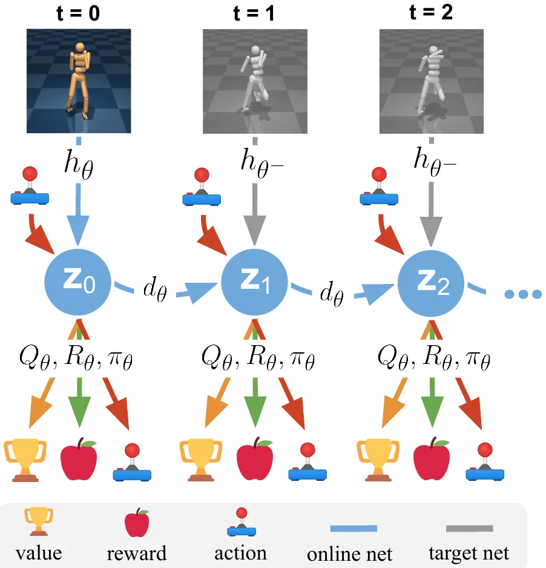
目标函数。从回放缓存采一段 \(\Gamma=(s_t,a_t,r_t,s_{t+1})_{t:t+H}\)，最小化按时间加权的目标：
\[\mathcal J(\theta;\Gamma)=\sum_{i=t}^{t+H}\lambda^{i-t}\mathcal L(\theta;\Gamma_i)\tag{7}\]单步损失由三项组成：
\[\mathcal L(\theta;\Gamma_i)=c_1\underbrace{\|R_\theta(z_i,a_i)-r_i\|_2^2}_{\text{奖励}}\tag{8}\] \[+\,c_2\underbrace{\|Q_\theta(z_i,a_i)-(r_i+\gamma Q_{\theta^-}(z_{i+1},\pi_\theta(z_{i+1})))\|_2^2}_{\text{价值}}\tag{9}\] \[+\,c_3\underbrace{\|d_\theta(z_i,a_i)-h_{\theta^-}(s_{i+1})\|_2^2}_{\text{潜状态一致性}}\tag{10}\]\(\lambda\) 让近处的预测权重更高。关键在于递推完全在潜空间做：只有第一帧走 \(h_\theta\)，三项的梯度都穿过时间回传。这和“先学模型、再学策略或价值”的做法不同。\(\theta^-\) 既用于价值目标，也用于一致性目标。
TD 目标怎么算。式 (9) 需要 \(\max_a Q_{\theta^-}\)，用规划来算太贵。所以学一个策略来近似，最小化：
\[\mathcal J_\pi(\theta;\Gamma)=-\sum_{i=t}^{t+H}\lambda^{i-t}Q_\theta(z_i,\pi_\theta(\mathrm{sg}(z_i)))\tag{11}\]\(\mathrm{sg}\) 是停梯度算子，式 (11) 只对策略参数优化。作者观察到，复杂任务上 \(\pi\) 不如规划，但用来做价值学习足够了。
潜状态一致性。以前常用预测未来状态或像素作为丰富的学习信号。这个问题很难，它要求网络建模环境里的一切。这里改用式 (10)：让预测的 \(z_{t+1}\) 接近真实下一观测的潜表示 \(h_{\theta^-}(s_{t+1})\)，完全绕开观测预测。这个设计也让模型学习不依赖观测的模态。
算法 2 TOLD（训练）
输入：θ, θ⁻ 随机初始化；η, τ, λ, B
1: while 没累
2: // 用 TD-MPC 从 s₀ ~ p₀ 收集一回合
3: for t = 0...T
4: a_t ~ Π_θ(·|h_θ(s_t))
5: (s_{t+1}, r_t) ~ T(·|s_t, a_t), R(·|s_t, a_t)
6: B ← B ∪ (s_t, a_t, r_t, s_{t+1})
7: // 用 B 更新 TOLD
8: for 每回合的更新次数
9: {s_t, a_t, r_t, s_{t+1}}_{t:t+H} ~ B
10: z_t = h_θ(s_t)
11: J = 0
12: for i = t...t+H
13: r̂_i = R_θ(z_i, a_i) 式 (8)
14: q̂_i = Q_θ(z_i, a_i) 式 (9)
15: z_{i+1} = d_θ(z_i, a_i) 式 (10)
16: â_i = π_θ(z_i) 式 (11)
17: J ← J + λ^{i−t} L(z_{i+1}, r̂_i, q̂_i, â_i) 式 (7)
18: θ ← θ − (1/H) η ∇_θ J
19: θ⁻ ← (1−τ)θ⁻ + τθ
update() 的对照
| 项 | 论文 | 代码 f4d85ec |
|---|---|---|
| TD 目标的下一潜状态 | 式 (9) 写 \(z_{i+1}\)，按记法是 \(d\) 递推的结果 | self.model.h(next_obs)：在线编码器重编真实观测，不是递推的结果，也不是目标编码器 |
| TD 目标的 Q | 单个 \(Q_{\theta^-}\) | \(\min(Q^-_1,Q^-_2)\)，动作用在线 \(\pi\) 加 0.05 噪声 |
| 求和范围 | 式 (7) \(i=t\dots t+H\)，\(H+1\) 项 | 模型损失 \(H\) 项（for t in range(horizon)，附录 F 的伪代码也是）；策略损失 \(H+1\) 项 |
| 一致性的尺度 | 式 (10) 是平方范数 | 对潜维度取平均，\(Z=50\) 时相当于每维系数 2/50 |
| 优化 | 算法 2 一个 \(J\)，第 18 行一步 | 策略单独一个优化器单独一步；模型梯度乘 \(1/H\)，和第 18 行一致 |
| 策略损失的 z | \(\mathrm{sg}(z_i)\) | zs 里都是 detach 的递推潜状态，一致 |
| 裁剪 | 没写 | 梯度范数 10；每项损失 clamp 到 \(10^4\) |
| 回放优先级 | “按价值损失” | \(Q_1,Q_2\) 对目标的 L1 误差，按 \(\rho^t\) 累加 |
第一行影响最实际。按代码，价值目标不依赖 \(d\) 的预测，这一路不受模型累积误差影响。动画第 3 幕有按钮对照。
这是我自己的实验，不是论文内容。观测 6 维：\(x,v\) 决定奖励，另外四个是两对匀速旋转的干扰量，幅度 5，和动作、奖励都无关。按算法 2 训练一个极小的 TOLD（\(h,d\) 线性，\(R,Q\) 12 隐单元，3000 步），用留出数据上 \(z\) 对各量的线性回归 \(R^2\) 衡量表示留下了什么。三个种子的均值：
| 潜维度 | 损失 | \(R^2(x)\) | \(R^2(v)\) | \(R^2\)(干扰) | 3 步奖励 MSE |
|---|---|---|---|---|---|
| 4 | TOLD | 0.959 | 0.508 | 0.686 | 0.089 |
| 4 | 无一致性 \(c_3=0\) | 1.000 | 0.964 | 0.512 | 0.041 |
| 4 | 重建（带解码器） | 0.007 | 0.015 | 0.999 | 0.129 |
| 2 | TOLD | 0.034 | 0.006 | 0.485 | 0.126 |
| 2 | 无一致性 \(c_3=0\) | 1.000 | 0.979 | 0.010 | 0.006 |
| 2 | 重建（带解码器） | 0.010 | 0.014 | 0.500 | 0.125 |
重建的结果符合论文的说法：容量被大幅度的干扰占满，任务量没有了。但表里还有一点论文没强调：一致性损失本身不过滤。匀速旋转的干扰一样好预测，\(Z=2\) 时它把容量让给了干扰，\(x\) 也没了。真正挑任务信息的是奖励和价值项。这和“一致性没用”不是一回事，论文附录 D 在 15 个任务上发现无正则平均更差。我的玩具动力学线性、状态也小，正则的好处体现不出来，不能外推。动画第 4 幕可以现场重跑。
在 92 个任务上评测，覆盖稀疏奖励、高维状态和动作、图像观测、多模态、目标条件和多任务。回答三个问题：和最好的基于模型、无模型方法比如何；只看奖励的目标是否还能多任务和迁移；性能和规划算力的关系。
实现细节。全部组件确定性 MLP。\(\epsilon\) 在前 25k 决策步从 0.5 退火到 0.05（脚注：环境步不依赖动作重复，决策步依赖）。\(H=5\)，用价值损失作为优先级的 PER 采样。规划迭代 6 轮（Dog 8，Humanoid 12），\(N=512\)（再加 5% 来自 \(\pi\)），每轮用前 64 条算 \(\mu,\sigma\)。图像任务是 3 帧堆叠的 84×84 RGB，±4 像素平移增强。论文说这个实现大多数任务单 GPU 一小时内解决。
基线。
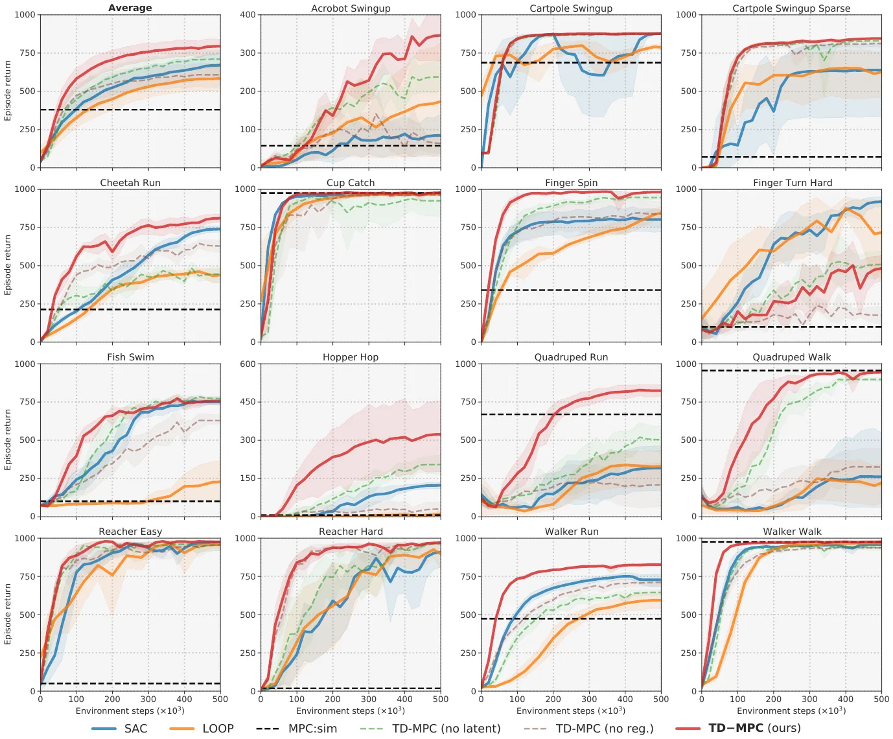
表 1 是图像任务的 DMControl 100k 基准（均值 ± 标准差，10 次运行）。基线是专门为图像调过的，本文没有。MuZero 和 EfficientZero 用离散化动作，EfficientZero 在评测前额外做 20k 步梯度，其他方法不做。离散化带来维度爆炸，所以它们解不了动作 6 维的 Walker Walk 和 Cheetah Run。
| 100k 环境步 | SAC State | SAC Pixels | CURL | DrQ | PlaNet | Dreamer | MuZero* | Eff.Zero* | TD-MPC |
|---|---|---|---|---|---|---|---|---|---|
| Cartpole Swingup | 812±45 | 419±40 | 597±170 | 759±92 | 563±73 | 326±27 | 219±122 | 813±19 | 770±70 |
| Reacher Easy | 919±123 | 145±30 | 517±113 | 601±213 | 82±174 | 314±155 | 493±145 | 952±34 | 628±105 |
| Cup Catch | 957±26 | 312±63 | 772±241 | 913±53 | 710±217 | 246±174 | 542±270 | 942±17 | 933±24 |
| Finger Spin | 672±76 | 166±128 | 779±108 | 901±104 | 560±77 | 341±70 | − | − | 943±59 |
| Walker Walk | 604±317 | 42±12 | 344±132 | 612±164 | 221±43 | 277±12 | − | − | 577±208 |
| Cheetah Run | 228±95 | 103±38 | 307±48 | 344±67 | 165±123 | 235±137 | − | − | 222±88 |
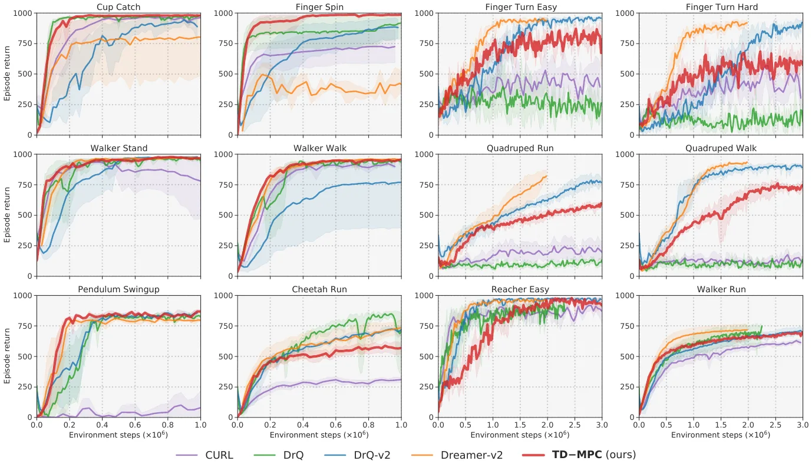
任务总计。6 个 Humanoid、Dog；15 个状态任务（6 个稀疏奖励）；6 个 DMControl 100k；12 个 Dreamer 基准图像任务；2 个多模态四足；50 个目标条件 Meta-World，以及 10 任务同时学的 MT10。Humanoid 只跑 3M 步，以往通常 30M。
6 + 15 + 6 + 12 + 2 + 50 = 91，再把 MT10 算 1 个才是 92。这里面有重复的底层任务，比如 Finger Spin、Cup Catch 同时出现在状态和图像两组。这个数是“实验配置数”。
不算 SAC State（它不看像素），每行最好的图像方法：Cartpole 813（EfficientZero），Reacher 952（EfficientZero），Cup 942（EfficientZero），Finger 943（TD-MPC），Walker 612（DrQ），Cheetah 344（DrQ）。TD-MPC 6 行里赢 1 行，且多数行误差区间互相重叠。论文的用词是“competitive”，准确。
和其他方法比。多数任务胜过或持平，复杂任务上差距更大，作者称这是 Dog 任务的第一个有记录的结果。LOOP 和 SAC 接近。MPC:sim 在运动任务上不错，稀疏奖励上失败。EfficientZero 在低维动作上很强，但 MCTS 要把动作离散化，高维不可行；TD-MPC 能处理 Dog 的 38 维。Finger Turn Hard 这个难探索任务上不如 SAC 和 LOOP，说明更好的探索策略可能有用。
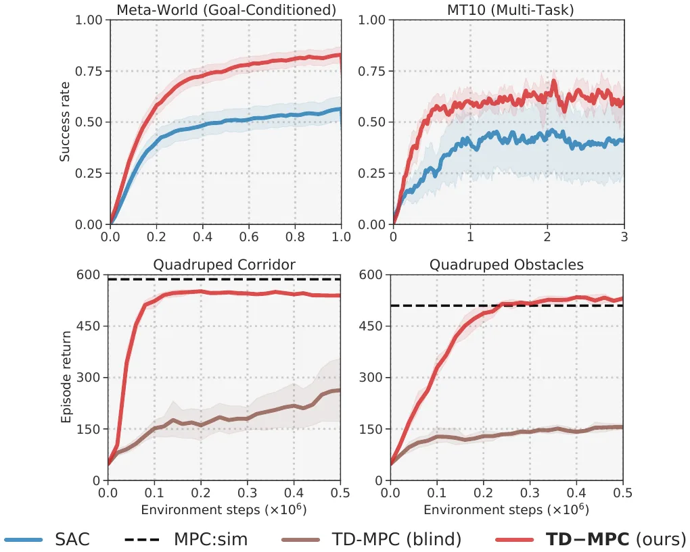
多任务、多模态、泛化。只看奖励的目标还能不能从任务之间受益？两个实验都说可以：MT10 共享一个策略，以及从 Walk 迁移到 Run（附录 A）。作者猜测相似任务的奖励结构相似，所以信息能共享，但无关任务上通用模型应该更占优。另一个好处是不依赖模态：同时编码本体和图像、把特征加起来就能解决多模态任务，看不到相机的智能体失败。
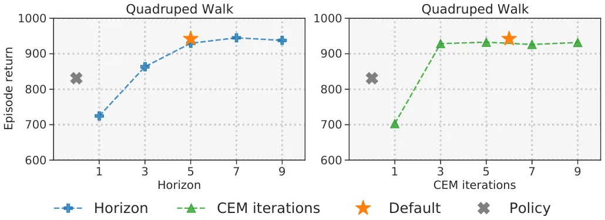
性能和计算预算。复杂任务（Quadruped Walk，12 维动作）上，多规划一般更好；但推理时迭代次数减半（相对训练）没有明显掉分。要非常快可以扔掉规划直接用 \(\pi\)，但一般不如规划。
| 设置 | 1 | 3 | 5 | 7 | 9 |
|---|---|---|---|---|---|
| H 变化（J = 6） | 724.5 | 863.4 | 929.5 | 945.0 | 937.6 |
| J 变化（H = 5） | 703.1 | 928.5 | 932.6 | 926.1 | 931.8 |
默认设置（星号）942.2，\(\pi\) 830.9，规划比 \(\pi\) 高 111，约 12%。
“迭代减半不掉分”：\(J=3\) 是 928.5，和 \(J=5\) 的 932.6、\(J=7\) 的 926.1 差不多，成立。但回报不掉不等于时间减半。耗时只测了 Quadruped Run（图 11）：\(J=3\) 是 12.9 ms，默认 20.4 ms，省 37%。见读者注 14。
星号和 H = 5 那个点是同一个设置，却画了 942.2 和 929.5 两个值，差 12.7。可以把这当成这张图的噪声尺度：H = 5 到 H = 9 的几个差别都比它小。官方 CSV 里 Quadruped Walk 在 500k 的均值是 931，和 929.5 那个点相近。
表 2 训练墙钟时间（Walker Walk 解决线 940，Humanoid Stand 解决线 800，单张 RTX3090，5 次运行）。
| 小时 | Walker SAC | LOOP | MPC:sim | TD-MPC | Humanoid SAC | TD-MPC |
|---|---|---|---|---|---|---|
| 解决耗时 | 0.41 | 7.72 | 0.91 | 0.47 | 9.31 | 9.39 |
| 每 500k 步 | 1.41 | 18.5 | − | 5.60 | 1.82 | 12.94 |
论文的结论：Walker Walk 比 LOOP 快 16 倍，每 500k 步省 3.3 倍；两个任务上解决耗时都和 SAC 持平，同时样本效率高得多。这就消除了基于模型和无模型在解决耗时上的差距。
16 倍（7.72 / 0.47 = 16.4）和 3.3 倍（18.5 / 5.60 = 3.30）都对。
两行相除可以反推“解决时用了多少环境步”。Walker Walk TD-MPC：0.47 / 5.60 × 500k = 42k，官方 CSV 里 5 个种子都是在 40k 这个检查点首次过 940，对得上。
Humanoid Stand TD-MPC：9.39 / 12.94 × 500k = 363k。但官方 CSV 里 360k 处的均值只有 428，均值首次过 800 是在 800k；各种子首次过 800 的平均是 740k。图 1 的矢量读数同样是约 800k。按每 500k 步 12.94 小时算，800k 需要 20.7 小时，740k 需要 19.2 小时，都约是表里 9.39 的两倍。
SAC 也有偏差，方向相同但小一些：9.31 / 1.82 × 500k = 2.56M，图 1 的 SAC 在这里约 660，首次过 800 约 3.34M（对应约 12.2 小时）。
如果按这些换算，Humanoid Stand 上 TD-MPC 要比 SAC 慢约 1.7 倍，“持平”就不成立。我不知道差在哪：可能墙钟时间不随步数线性（但默认 \(H\) 只在前 25k 步变化），也可能那一行的 12.94 口径不同。论文没写解决耗时的计算方式。Walker Walk 上的结论不受影响。
时序差分。DDPG、SAC 学策略和价值，不学模型。QT-Opt 等也学 \(Q\)，但用无模型 CEM 代替或增强策略。本文联合学模型、价值和策略，用采样规划交互。
基于模型的 RL。常见做法是学一个环境模型用于规划，或者用它生成数据训练无模型算法。一些方法用视频预测学动力学；MOPO、MOReL 是离线设定；MuZero、EfficientZero 用奖励预测学潜动力学，其中 EfficientZero 的模型学法最接近本文，但 MCTS 不兼容连续动作。学习 MPC 的终值函数已有先例，作者说（就他们所知）自己是第一个在连续控制里用 TD 学习联合学模型和价值函数的。
混合算法。很多工作结合无模型和基于模型的成分，大多和本文正交。Clavera 等、Buckman 等、Lowrey 等用模型改进策略和价值学习。LOOP 用学到的状态预测模型扩展 SAC，并约束规划贴近 SAC 策略；本文用规划替换策略，学的是面向任务的潜模型。
TD-MPC 在模型的学法和用法上都很不同，已经能在多种连续控制任务上胜过基于模型和无模型方法，并且稍作修改就能在图像任务上达到当时最好水平。作者认为还有不少改进空间：更有创意地使用模型，更好的探索，模型结构上的创新。致谢提到 NSF 和 Meta、Qualcomm 的资助。
看 TOLD 能否在相关任务之间迁移：在 Walker 和 Quadruped 的 Walk 上训练，再到 Run 上在线微调，所有超参数不变，只有初始化不同。整体微调明显收敛更快；再分别冻结 \(h_\theta\)，以及同时冻结 \(h_\theta,d_\theta\)。只冻结 \(h\) 几乎不损失，说明编码器学到的东西可迁移；同时冻结 \(d\)，收敛显著变慢，说明 \(d\) 更偏向任务专属。
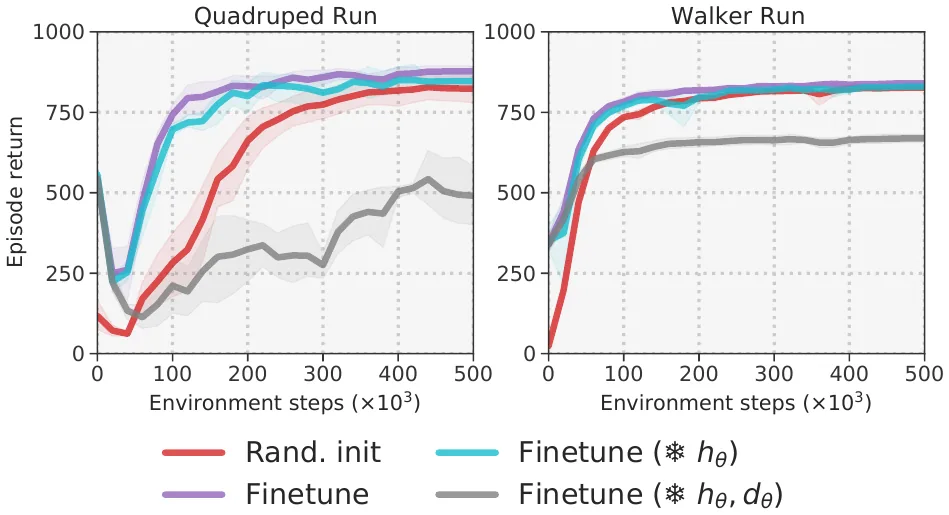
表 3：Compute 是作者对训练和推理相对算力的总体估计。“policy w/ CEM”表示推理主要靠策略，反之亦然。
| 方法 | 模型目标 | 价值 | 推理 | 连续动作 | 算力 |
|---|---|---|---|---|---|
| SAC | ✗ | ✓ | Policy | ✓ | Low |
| QT-Opt | ✗ | ✓ | CEM | ✓ | Low |
| MPC:sim | Ground-truth model | ✗ | CEM | ✓ | High |
| POLO | Ground-truth model | ✓ | CEM | ✓ | High |
| LOOP | State prediction | ✓ | Policy w/ CEM | ✓ | Moderate |
| PlaNet | Image prediction | ✗ | CEM | ✓ | High |
| Dreamer | Image prediction | ✓ | Policy | ✓ | Moderate |
| MuZero | Reward/value pred. | ✓ | MCTS w/ policy | ✗ | Moderate |
| EfficientZero | Reward/value pred. + contrast. | ✓ | MCTS w/ policy | ✗ | Moderate |
| TD-MPC (ours) | Reward/value pred. + latent pred. | ✓ | CEM w/ policy | ✓ | Low |
表 3 把 TD-MPC 和 SAC 都标 Low。表 2 里每 500k 步的耗时，TD-MPC 是 SAC 的 4.0 倍（Walker，5.60 / 1.41）和 7.1 倍（Humanoid，12.94 / 1.82）。它只有按解决耗时算才可能和 SAC 同档，而 Humanoid 这一项见读者注 10。表 3 写明是“总体估计”，这不算矛盾，但读的时候不要把 Low 理解成每步开销相同。
补充图 6：动作维度高的任务（两个 Quadruped）规划和 \(\pi\) 的差距更大；动力学简单的任务（Cartpole）预算变化影响小。默认 \(H=5\)、6 轮在算力和性能之间平衡得不错。
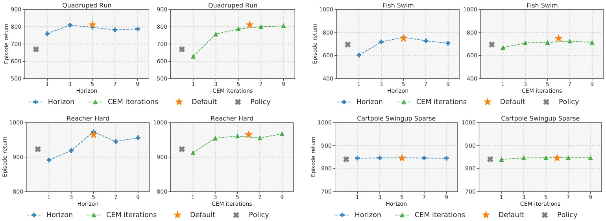
| 任务（动作维） | 默认 | \(\pi\) | 差 | H=1 | H=5 | H=9 | J=1 | J=3 | J=9 |
|---|---|---|---|---|---|---|---|---|---|
| Quadruped Run (12) | 811.9 | 669.4 | 142.5 | 760.5 | 796.8 | 787.3 | 629.0 | 757.5 | 805.3 |
| Fish Swim (5) | 749.9 | 696.2 | 53.7 | 603.3 | 758.6 | 707.1 | 669.1 | 709.6 | 714.7 |
| Reacher Hard (2) | 965.3 | 923.1 | 42.2 | 891.6 | 973.5 | 956.2 | 912.7 | 954.6 | 967.7 |
| Cartpole Sparse (1) | 846.1 | 840.7 | 5.4 | 845.6 | 846.9 | 845.1 | 840.1 | 846.8 | 847.2 |
差距随动作维度单调缩小，附录的说法成立（四个点加图 6）。这只是相关：动作维度和任务难度分不开。
§H 说 Quadruped Run 从 \(H=5\) 降到 1 “没有显著下降”。读数是 760.5 对 796.8（或星号 811.9），差 4.6% 到 6.3%，比前面的噪声尺度略大。Fish Swim 上同样操作掉到 603，差 20%。这句话只对那个任务。
把式 (10) 换成：(i) 对比损失，采用 SimSiam 框架，投影是 2 隐藏层 MLP 输出 32 维，预测头 1 隐藏层，ELU，隐藏 256，投影和预测模块用 BatchNorm，\(c_3=100\)（原本是 2）略好；(ii) 重建，解码器镜像编码器，1 隐藏层 MLP，ELU。外加无正则基线。结论：重建和对比都比无正则好，本文的一致性损失结果最稳定。
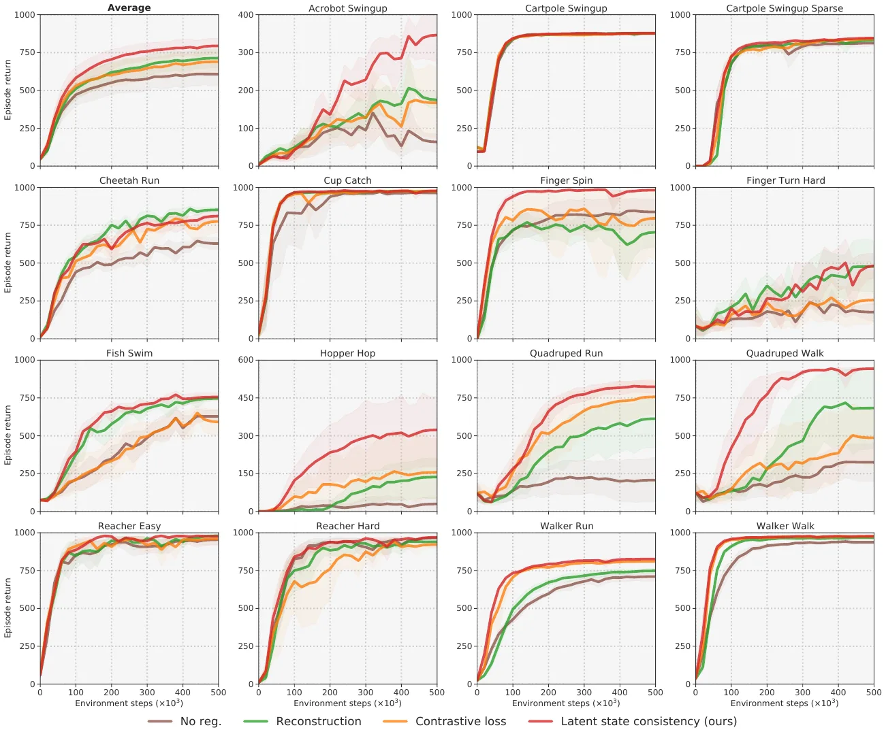
图 9 是 Humanoid 三个任务上规划末轮 \(\sigma\) 的平均值随训练的变化。\(\sigma\) 随训练下降，任务解决时收敛；越难的任务下降越慢，作者猜是奖励和价值估计的方差更大。所以框架本身能平衡探索和利用。
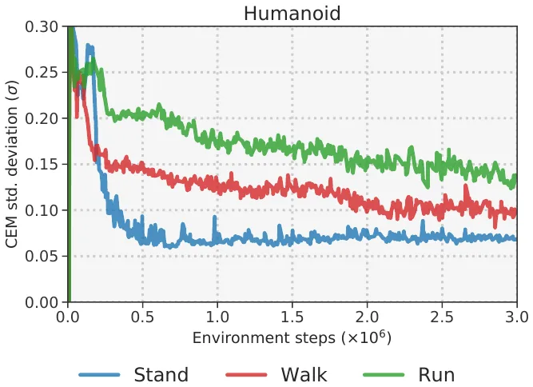
状态任务的 \(h_\theta\) 是单隐藏层 256 的 MLP；图像任务是 4 层 CNN，核 (7,5,3,3)，步长 2，每层 32 通道。其他部件都是 2 层 512 的 MLP。价值函数用 LayerNorm。\(R_\theta,Q_\theta\) 末层权重和偏置初始化为 0，减小训练早期的偏差，其他全连接层用正交初始化。更大的网络不一定更好。多任务时把 one-hot 任务向量拼到状态上；多模态时分别编码再相加。
全部超参数见表 4，大部分沿用 SAC 实现的取值。动作重复按任务设定，见附录 H 的表 7。
| 表 4 超参数 | 值 |
|---|---|
| 折扣 γ | 0.99 |
| Seed steps | 5,000 |
| 回放缓存 | Unlimited |
| 采样 | PER (α = 0.6, β = 0.4) |
| 规划长度 H | 5 |
| 初始 (μ⁰, σ⁰) | (0, 2) |
| Population size | 512 |
| Elite fraction | 64 |
| Iterations | 12 (Humanoid)，8 (Dog, pixels)，6 (otherwise) |
| Policy fraction | 5% |
| Particles | 1 |
| Momentum | 0.1 |
| Temperature τ | 0.5 |
| MLP hidden | 512 |
| Activation | ELU |
| Latent dim | 100 (Humanoid, Dog)，50 (otherwise) |
| Learning rate | 3e-4 (Dog, pixels)，1e-3 (otherwise) |
| Optimizer | Adam (β₁ = 0.9, β₂ = 0.999) |
| Temporal λ | 0.5 |
| c₁ | 0.5 |
| c₂ | 0.1 |
| c₃ | 2 |
| Exploration ε | 0.5 → 0.05 (25k steps) |
| Horizon schedule | 1 → 5 (25k steps) |
| Batch size | 2048 (Dog)，256 (pixels)，512 (otherwise) |
| ζ | 0.99 |
| Steps per gradient update | 1 |
| θ⁻ update frequency | 2 |
附录写 Walker Run（\(S=24,A=6\)）总参数约 1,507,000。按附录的结构、\(Z=50\) 现算：\(h\) 19,250，\(d\) 317,490，\(R\) 292,353，\(\pi\) 291,846，两个 \(Q\) 各 293,377（含 LayerNorm 1,024），合计 1,507,693。对得上。
配置文件 cfgs/default.yaml 和任务配置和表 4、7 对过：\(N\)、\(k\)、\(J\)（dog 8，humanoid 12，pixels 没有单独设 iterations，见下）、\(\tau\)、动量、\(c_{1:3}\)、\(\lambda\)、PER、lr、batch、动作重复都一致。tau: 0.01 对应 \(\zeta\)（读者注 2）。不一致的两处：表 4 写像素任务 8 轮，pixels.yaml 里没有 iterations，默认 6；表 4 写缓存 Unlimited，max_buffer_size 是 1,000,000。“Elite fraction 64”是数量不是比例。kappa: 0.1 在 src 里没有被使用。
结构摘要（\(S,Z,A\) 分别是状态、潜变量、动作维度；约 1,507,000 参数，Walker Run）：
h : Linear(S,256) ELU Linear(256,Z) d : Linear(Z+A,512) ELU Linear(512,512) ELU Linear(512,Z) R : Linear(Z+A,512) ELU Linear(512,512) ELU Linear(512,1) pi: Linear(Z,512) ELU Linear(512,512) ELU Linear(512,A) Q1,Q2: Linear(Z+A,512) LayerNorm Tanh Linear(512,512) ELU Linear(512,1)
论文还给了类 PyTorch 的训练伪代码，是算法 2 的代码版：取一段，编码第一帧，for \(t\) in range(\(H\)) 递推，每步累加 \(\rho^t\) 加权的三项损失（\(\rho\) 就是 \(\lambda\)），最后加权求和、反传、更新目标。价值损失是两个 \(Q\) 的 MSE 之和。
先在 DMControl 上调好本文方法和基线，再用同一套超参数跑 Meta-World。
SAC。用 Yarats 和 Kostrikov 的实现。除了 \(\zeta=0.99\)（原 0.995）和批大小 512（原 1024）外都是原值。
LOOP。官方实现，作者说就他们所知以前没有在 DMControl 和 Meta-World 上测过，所以尽力适配：\(\zeta=0.99\)，批从 256 增到 512，seed 步数从 10,000 降到 1,000。
| 表 5 SAC | 值 |
|---|---|
| γ | 0.99 |
| Seed steps | 1,000 |
| 缓存 | Unlimited |
| 采样 | Uniform |
| MLP hidden | 1024 |
| Activation | RELU |
| Latent dim | 100 (Humanoid, Dog)，50 (otherwise) |
| Optimizer θ | Adam (β₁ = 0.9, β₂ = 0.999) |
| Optimizer α | Adam (β₁ = 0.5, β₂ = 0.999) |
| lr θ | 3e-4 (Dog)，1e-3 (otherwise) |
| lr α | 1e-4 |
| Batch | 2048 (Dog)，512 (otherwise) |
| ζ | 0.99 |
| Steps per gradient update | 1 |
| θ⁻ update frequency | 2 |
| 表 6 LOOP 专属 | 值 |
|---|---|
| Planning horizon | 3 |
| Population | 100 |
| Elite fraction | 20% |
| Iterations | 5 |
| Policy fraction | 5% |
| Particles | 4 |
| Momentum | 0.1 |
| MLP hidden | 256 |
| Activation | ELU/RELU |
| Ensemble | 5 |
MPC:sim。用真实模拟器的原始 MPC，没有终值，所以非参数。规划实现同样是 MPPI，\(H=10\)，4 轮，每轮 \(N=200\)，用前 20（10%）更新，其他不变。局部解足够的运动任务上表现不错，稀疏奖励等任务上往往失败。
无潜消融。\(h_\theta\) 换成恒等映射，模型直接在状态空间前向预测，一致性退化成状态预测。和以往工作不同，奖励和价值的梯度仍然穿过模型，所以这是个更强的基线。
无一致性。\(c_3=0\)，只用奖励和价值损失，更接近 MuZero。其他基线的结果取自相关论文。
算力和推理时间大致线性。默认设置约 20 ms 每步，约 50 Hz，论文认为足够许多实时机器人应用（操作、导航，一定程度上的运动，假设有机载 GPU）。Quadruped Run 上 \(H\) 从 5 降到 1 约 12 ms。\(\pi\) 比规划差，但快接近 6 倍。
| 表 7 任务 | 动作重复 |
|---|---|
| Humanoid | 2 |
| Dog | 2 |
| Walker | 2 |
| Finger | 2 |
| Cartpole | 8 |
| Other (DMControl) | 4 |
| Meta-World | 1 |
表 7 取自以往工作；DMControl Dreamer 基准全部用 2，Meta-World 不用动作重复。
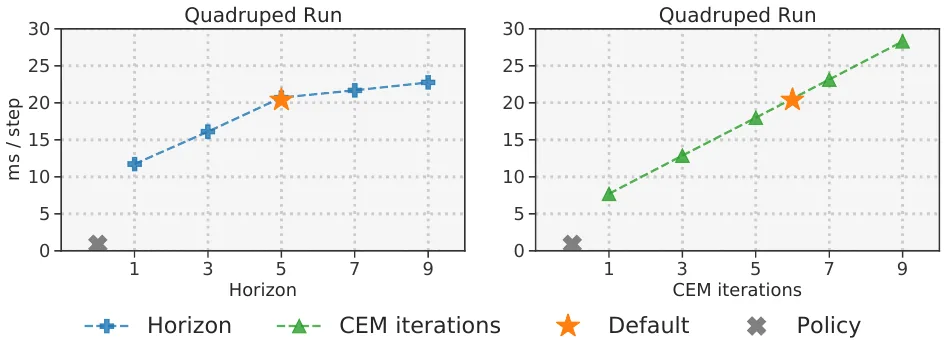
| ms / 步 | 1 | 3 | 5 | 7 | 9 |
|---|---|---|---|---|---|
| H 变化（J = 6） | 11.7 | 16.1 | 20.7 | 21.7 | 22.8 |
| J 变化（H = 5） | 7.7 | 12.9 | 18.0 | 23.1 | 28.3 |
默认 20.4 ms；\(\pi\) 的叉号中心约 0.9 ms。“约 20 ms”和“约 12 ms”对得上。但 20.4 / 0.9 约 23 倍，不是正文说的“接近 6 倍”。要和 6 倍对上，\(\pi\) 得是 3.4 ms；叉号的外框大约只有 ±1.2 ms，也够不到。正文和图不一致，哪个对我无法判断。
J 这条线非常线性，每轮约 2.6 ms，截距约 5 ms。H 这条线在 H = 5 之后变缓（每步约 0.5 ms，前面约 2.2 ms），不是正文说的“大致线性”，这一点比较奇怪：\(d,R\) 的调用次数和 \(H\) 成正比。可能是 GPU 批处理的缘故，论文没解释。
图 14 是 50 个任务中按字母序前 24 个的曲线（都是 v2，目标条件版本，比固定目标更难）。SAC 多数任务上不差，涉及复杂操作时 TD-MPC 省样本得多，比如 Bin Picking、Box Close、Hammer。多任务实验中，因为原论文报告的是各任务的最大成功率，这里也用同样的指标给出 SAC 基线（表 8），作者认为只跑 3M 步就和原论文接近。
| 表 8 任务（SAC，MT10） | 最大成功率 |
|---|---|
| Window Close | 1.00 |
| Window Open | 1.00 |
| Door Open | 1.00 |
| Peg Insert Side | 0.00 |
| Drawer Open | 0.85 |
| Pick Place | 0.00 |
| Reach | 1.00 |
| Button Press Down | 1.00 |
| Push | 0.00 |
| Drawer Close | 1.00 |
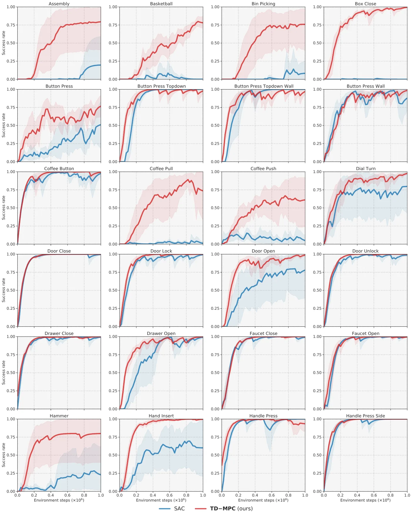
两个自建的 3D 运动任务，同时给本体感觉和第一人称相机。Quadruped Corridor：沿走廊恒定目标速度前进，要看到墙并调整方向。Quadruped Obstacles：走廊里有挡视线、挡路的障碍物，要走之字形。
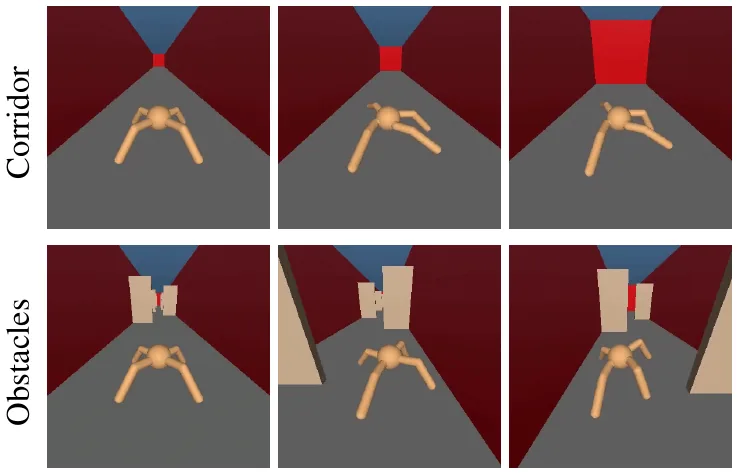
用 rliable 工具包，给 15 个状态任务在 500k 步后的中位数、四分位均值（IQM，去掉首尾各 25% 后的均值）、均值，95% 置信区间用分层百分位自助法。
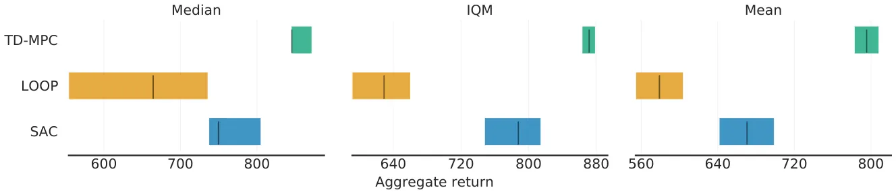
| 置信区间 | 中位数 | IQM | 均值 |
|---|---|---|---|
| TD-MPC | 845–872 | 863–879 | 783–808 |
| SAC | 737–805 | 748–814 | 641–699 |
| LOOP | 554–736 | 591–660 | 554–604 |
用官方 CSV 重算 TD-MPC（15 个任务、5 种子、75 个数）：均值 796，中位数 865，IQM 865，都落在区间内，CSV 和这张图一致。
§5 说 “LOOP 的表现和 SAC 接近”。这张图上 LOOP 在 IQM 和均值上的区间都低于 SAC，且不重叠。LOOP 的超参数是本文作者自己适配的（附录 G），这点要一起看。
图 15 是 TD-MPC 在七个任务上成功轨迹的关键帧，这些任务都在 1M 环境步内解决。回合长度 DMControl 1000，Meta-World 500。视频见项目主页。
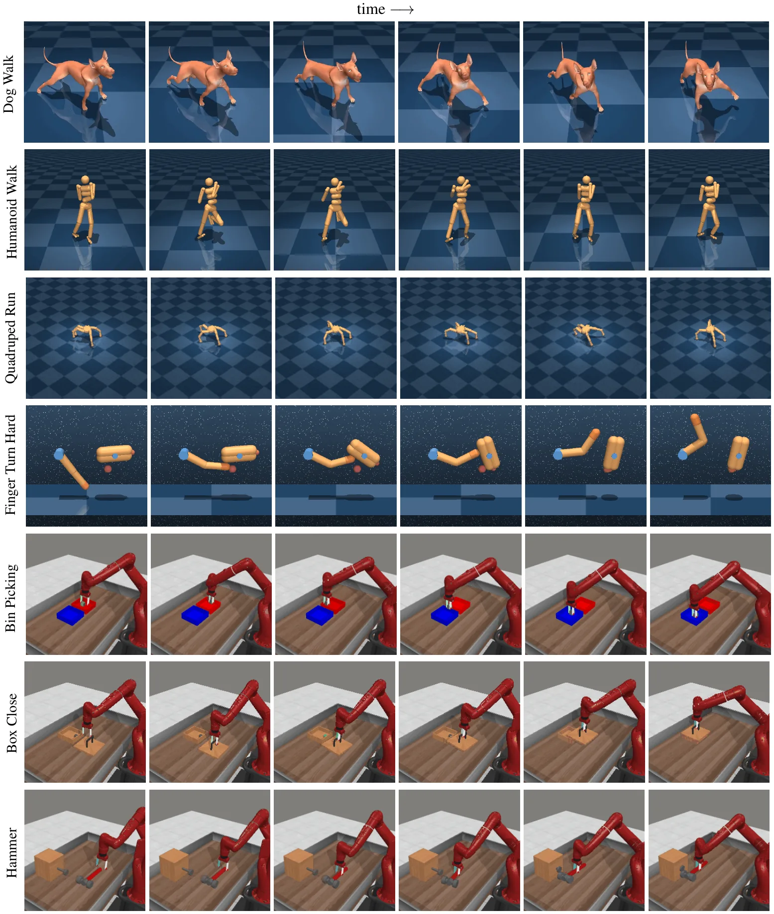
下面的地址都用脚本访问过，均返回 200（2026-11-06）。
| 名字 | 是什么 | 论文 |
|---|---|---|
| DMControl | DeepMind 连续控制任务集，状态和图像 | 1801.00690 |
| Meta-World | 50 个机械臂操作任务（代码），含 MT10 多任务设定 | 1910.10897 |
| MPPI | 本文规划算法的来源 | Williams 等 2015 |
| POLO | 带学习价值的 MPC，真实模型 | Lowrey 等 |
| DDPG | 确定性策略，加噪声探索 | Lillicrap 等 |
| QT-Opt | 用 CEM 代替策略网络 | Kalashnikov 等 |
| rliable | 聚合指标工具 | 2108.13264 |
| SuperMimic | 引用本文的论文，本站精读 | 2610.28480 |
其他基线的链接在 §5 第一次出现的位置。